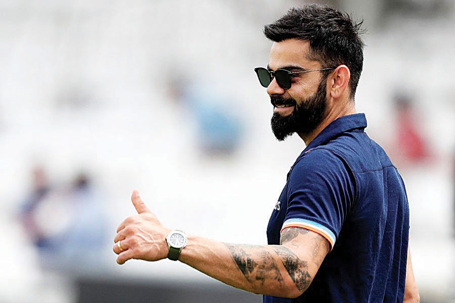
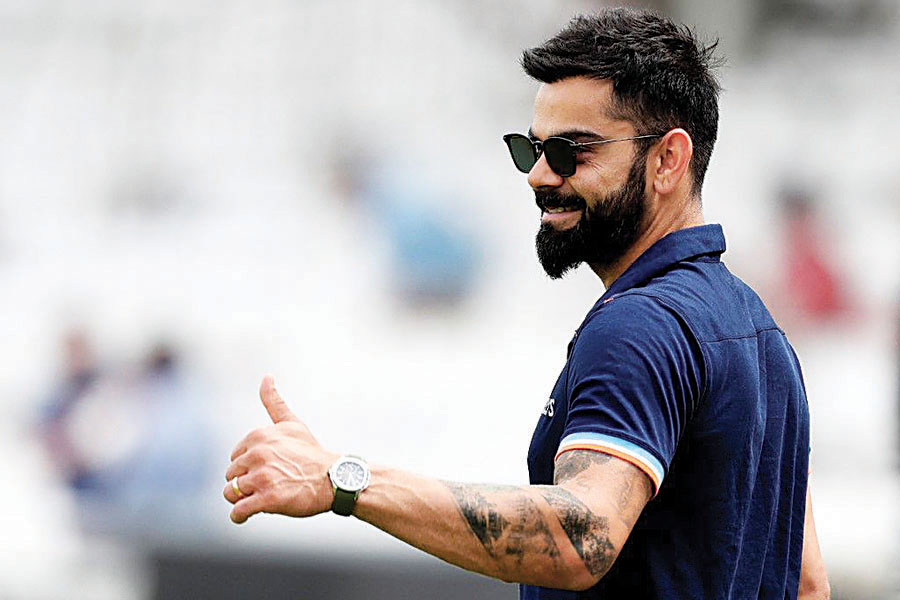

Virat Kohli was born on 5 November 1988 in Delhi into a Punjabi Hindu family.
His father, Prem Kohli, worked as a criminal lawyer and his mother, Saroj Kohli,
served as a housewife. He has an older brother, Vikas, and an older sister, Bhawna.[6]
Kohli's formative years were spent in the Uttam Nagar and commenced his early education
at Vishal Bharti Public School.[7] According to his family, Kohli exhibited an early affinity
for cricket as a mere three-year-old. He would pick up a cricket bat, display natural skill, and request
his father to bowl to him.[8]
In 1998, the West Delhi Cricket Academy (WCDA) was created and on 30 May of that year,
Prem Kohli, espoused his younger son's fervour for cricket, assisted nine-year-old Kohli's a
spirations and arranged for him to meet Rajkumar Sharma, who initially perceived him to be just another
enthusiastic and determined young boy.
In August 2008, Kohli was selected for inclusion in the ODl squad for the tour of Sri Lanka and the
Champions Trophy in Pakistan. Prior to the Sri Lankan tour, Kohli had limited experience, with only
eight List A matches under his belt.[45] So, his selection was considered a "surprise call-up".[46]
During the Sri Lankan tour, as both first-choice openers Sachin Tendulkar and Virender Sehwag, were
unable to play due to injury, Kohli was required to fill the role of makeshift opener throughout the
series.[47] On 18 August 2008, Kohli made his international debut at the age of 19 in the first ODI of
the tour, where he was dismissed for 12 runs, caught dead in front by an incutter from Nuwan
Kulasekara.[48] However, in the fourth match of the series, Kohli achieved his inaugural half century in
the ODl format, with a total of fifty-four runs scored.[49]
Following the postponement of the Champions Trophy to 2009, Kohli was picked as a replacement for the
injured Shikhar Dhawan in the India A squad for the unofficial Tests against Australia A in September
2008.[50] Despite limited opportunities, he managed to make an impact in the single innings that he
participated in, scoring 49 runs.[51] In October 2008, Kohli participated in a four-day tour match
against Australia as part of the Indian Board President's XI team. The match featured a formidable
Australian bowling line-up that consisted of Brett Lee, Stuart Clark, Mitchell Johnson, Peter Siddle and
Jason Krejza. Despite this, Kohli displayed his batting prowess by scoring 105 runs in the first innings
and an unbeaten 16 runs in the second innings, demonstrating his ability to perform against high-level
international competition.[52]
In July 2006, Kohli was selected in the India Under-19 squad on its tour of England. He averaged 105 in
the three-match ODI series against England Under-19s,[34] while also averaging 49 in the three-match
Test series.[35] Following India Under-19's success in both the ODI and Test series, the team's coach
Lalchand Rajput noted Kohli's adeptness in facing both pace and spin bowling and expressed his
admiration for profound technical prowess.[36] In September, the India Under-19 team toured Pakistan. In
the first Test match, Kohli scored 63 and 28 as India won by 271 runs against Pakistan Under-19s. In the
second match, he contributed 83 runs to India's victory by 240 runs and an innings. He concluded the
tour with 80 runs in the final ODI game at Lahore.[37] In early 2007, Kohli was a part of the India
Under-19 team that toured New Zealand, where he scored 113 in the first Test match. The series ended in
a draw with a 1-1 score line. In the following month, the team travelled to Malaysia for a tri-series
against England Under-19s and Sri Lanka Under-19s, where Kohli did not get many opportunities to bat. In
July–August, India Under-19 embarked on a tour for a tri-series against Sri Lanka Under-19s and
Bangladesh Under-19s, where he did not score a half-century in any of the matches. However, he made a
comeback with scores of 144 and an unbeaten 94 in the following Test series.[38]
In February-March 2008, Kohli assumed the captaincy of the Indian squad that went on to triumph at the
2008 Under-19 Cricket World Cup held in Malaysia. He demonstrated his competence as a batsman, amassing
235 runs in 6 games at an average of 47, ranking as the tournament's third-highest scorer and one of
three cricketers to compile a century.[39] His century, a knock of 100 runs off 74 balls, versus the
West Indies Under-19s in a group stage encounter, was lauded by ESPNcricinfo, as "the innings of the
tournament." This innings paved the way for India's 50-run triumph and fetched Kohli the man of the
match award.[40] Additionally, Kohli's all-round performance in the semi-final against New Zealand
Under-19s, where he captured 2 wickets and contributed 43 runs in the run-chase, was significant to
India's 3-wicket victory.[41] In the championship match, Kohli managed a modest score of 19 against
South Africa Under-19s, his contribution lead to India's eventual 12-run win (via D/L method).[42]
In the first seven matches of the Commonwealth Bank triangular series that India played against hosts Australia
and Sri Lanka, Kohli made two fifties-77 at Perth and 66 at Brisbane, both against Sri Lanka.[49] Being set a
target of 321 by Sri Lanka, Kohli came to the crease with India's score at 86/2 and went on to score 133 not out
from 86 balls to take India to a comfortable win with 13 overs to spare.[108] India earned a bonus point with
the win and Kohli was named Man of the Match for his knock.[109] Former Australian cricketer and commentator
Dean Jones rated Kohli's innings as "one of the greatest ODI knocks of all time".[110] However, Sri Lanka beat
Australia three days later in their last group fixture and knocked India out of the series.[111] With 373 runs
at 53.28, Kohli finished as India's highest run-scorer and lone centurion of the series.[112]
Kohli fielding during a CB Series match against Australia in February 2012
Kohli was appointed the vice-captain for the 2012 Asia Cup in Bangladesh on the back of his fine performances in
Australia. Kohli was in fine form during the tournament, finishing as the leading run-scorer with 357 runs at an
average of 119.[113] In the final group stage match against Pakistan, he scored his personal best of 183 from
148 balls, his 11th ODI century. He helped India to chase down 330, their highest successful ODI run chase at
the time.[114] His knock was the highest individual score in Asia Cup history surpassing previous record of 144
by Younis Khan in 2004 and the joint second highest score along with Dhoni in an ODI run-chase; also became the
highest individual score against Pakistan in ODIs.[115] Kohli was awarded the man of the match in both the
matches that India won,[116][117] nonetheless India could not progress to the final of the tournament.[118]
During New Zealand tour, he averaged 58.21 in the five-match ODI series[166] in which his all efforts went in
vain as India were defeated 4-0. He made 214 runs at 71.33 in the two-match Test series that followed[167]
including an unbeaten 105 on the last day of the second Test at Wellington that helped India save the
match.[168] India then traveled to Bangladesh for the Asia Cup and World Twenty20. Dhoni was ruled out of the
Asia Cup after suffering a side strain during the New Zealand tour, which led to Kohli being named the captain
for the tournament.[169] Kohli scored 136 off 122 balls in India's opening match against Bangladesh, sharing a
213 run third wicket stand with Ajinkya Rahane, which helped India successfully chase 280.[170] It was his 19th
ODI century and his fifth in Bangladesh, making him the batsman with most ODI centuries in Bangladesh.[171]
India were knocked out of the tournament after narrow losses against Sri Lanka and Pakistan in which Kohli
scored 48 and 5 respectively.[49] Dhoni returned from injury to captain the team for 2014 ICC World Twenty20
while Kohli was named vice-captain. He scored 54 off 41 balls in the game against West Indies and an unbeaten 57
from 50 balls against Bangladesh, both in successful run chases.[172] In the semi-final, he made an unbeaten 72
in 44 deliveries to help India achieve the target of 173.[173] He won the man of the match for this knock. In
the final against Sri Lanka India posted the target of 130/4 in which Kohli top scored 77 from 58 balls.
Notwithstanding his innings, India lost the match by six wickets.[174] Kohli made a total of 319 runs in the
tournament at an average of 106.33, a record for most runs by an individual batsman in a single World Twenty20
tournament.[175] For his achievement he won the Man of the Tournament award.[176
Kohli got double centuries in the next two Test series against England and Bangladesh, making him the first
batsman ever to score double centuries in four consecutive series. He broke the record of Australian great
Donald Bradman and Rahul Dravid, both of whom had managed to get three. Against England, he scored his
then-highest Test score of 235.[219]
Kohli got the chance to captain in an ICC tournament for the first time in the 2017 ICC Champions Trophy. In the
semi-final against Bangladesh, Kohli scored 96* and became the fastest batsman in terms of innings to reach
8,000 runs in ODIs in 175 innings.[220] India reached the final, but lost to Pakistan by 180 runs. In the third
over of Indian innings, Kohli was dropped in the slips for just five runs but caught the next ball by Shadab
Khan at point on the bowling of Mohammad Amir.[221] He was also named as part of the 'Team of the Tournament' at
the 2017 Champions Trophy by the ICC
n April 2019, he was named the captain of India's squad for the 2019 Cricket World Cup.[254] On 16 June 2019, in
India's match against Pakistan, Kohli became the fastest batsman in terms of innings to score 11,000 runs in ODI
cricket. He reached the landmark in his 222nd innings.[255] Eleven days later in the match against the West
Indies, Kohli became the fastest cricketer in terms of innings to score 20,000 runs in international cricket,
doing so in his 417th innings.[256] Kohli scored five consecutive fifty plus scores in the tournament .
Nonetheless, India lost the semi-final against New Zealand in which Kohli was out for just a run.[257] After the
World Cup, India toured West Indies for 3 T20Is and 3 ODIs followed by two test matches .[258] Kohli was
instrumental in ODI series win as he struck back to back hundreds in second and third ODI. He was awarded player
of the series for his match performances.[259] In the following test series which India won 2-0, Kohli became
most successful test captain for India, going past MS Dhoni who had 27 wins
The English cricket team's tour of India in 2020-2021 began with a long 4-match Test series. Kohli made 172 runs
across 4 Test matches, at an average of 28.66 with 2 half-centuries and 2 ducks. During the second test at
Chepauk, he scored 62 on a pitch which English batting great Geoffrey Boycott described as a template to bat and
score runs on a turning pitch.[271] In 2020, Kohli scored a combined (Test, ODI and T20I) total of 842 runs from
24 innings with highest score of 89 and an average of 36.60.[272]
Kohli was dismissed for a duck again in the 1st T20I of a 5-match series. However, he found his form in the
latter part of the series and ended the series as the highest run-scorer from both sides with 231 runs to his
name and 3 half-centuries at an average of 115.50. India clinched the series 3-2; Kohli was adjudged as the Man
of the Series for his performances.[273] During the second T20I, Kohli became the first ever batsman to complete
3,000 runs in the format.[274] In the 3-match ODI series, Kohli scored 129 runs in 3 innings with 2
half-centuries as India won the series 2-1. During the 2nd ODI, Kohli became the second batsman after Ricky
Ponting to score 10,000 runs batting at number 3.[
 
